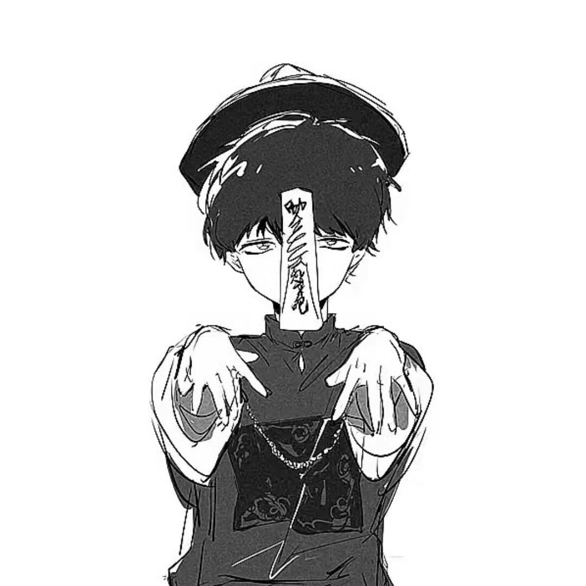

INTRO
AzathothLXL
以 High Performance Compute、Computer Vision 和 Quantam Chemistry Compute 为核心兴趣的个人数字空间。
这里会逐渐沉淀我的文章、图片随笔和长期记录。页面整体使用固定背景与局部毛玻璃蒙版的方式， 让内容像悬浮在背景上的独立窗口，尽量克制、平静，同时保留一点 macOS 式的轻盈感。
focus High Performance Compute / Computer Vision / Quantam Chemistry Compute
hobby 拼胶 / 健身 / League of Legends
notes 博客、相册与个人长期记录会继续慢慢补齐。
BLOGS
按时间组织的文章列表
每篇文章都放在 `blogs/<文章标题>/` 下，正文使用 Markdown， 配图存放在 `pic/` 目录里。首页会按最新内容优先展示，文章卡片点击后会在新窗口打开详情页。
Latest Writing
最新文章
ALBUM
瀑布流式的图片与随笔
相册参考了 SimonAKing Gallery 那种轻盈的画廊排列方式，但每一张图片下面都保留一点随笔预览。 点击图片卡片后，会在当前页弹出内部详情窗口，展示大图和 Markdown 渲染后的文字。
Selected Frames
相册预览
RESUME
developing...
这一部分已预留版式，后续可以继续补充教育经历、科研方向、项目经验或技术栈时间线。
CONTACT
联系方式
如果你想交流技术、合作项目，或者只是想看看我还会把这个主页继续做成什么样子，都可以从这里找到我。
© AzathothLXL. Blogs, gallery and notes are still evolving.